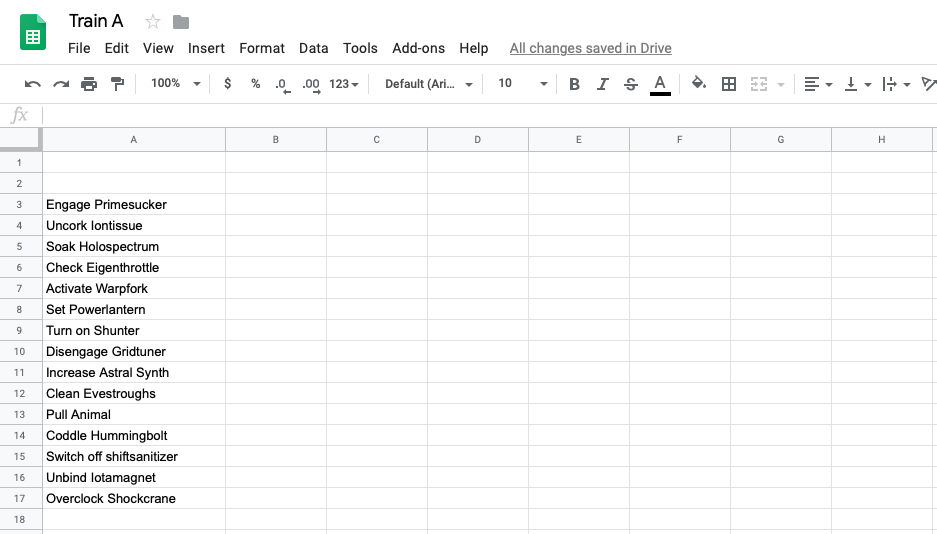
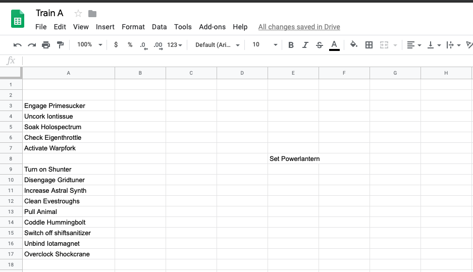
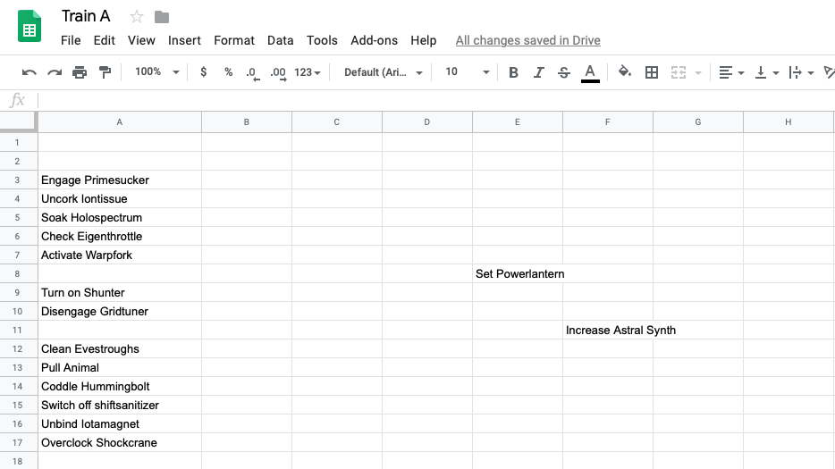
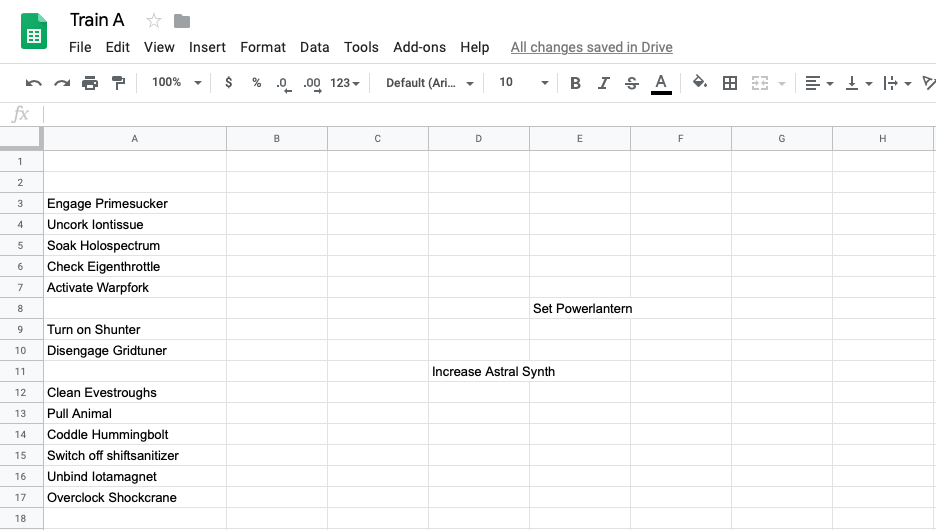
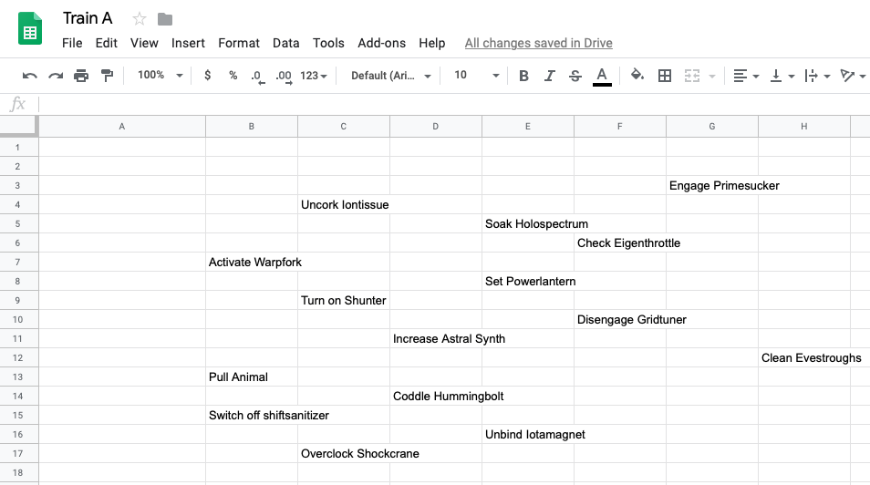
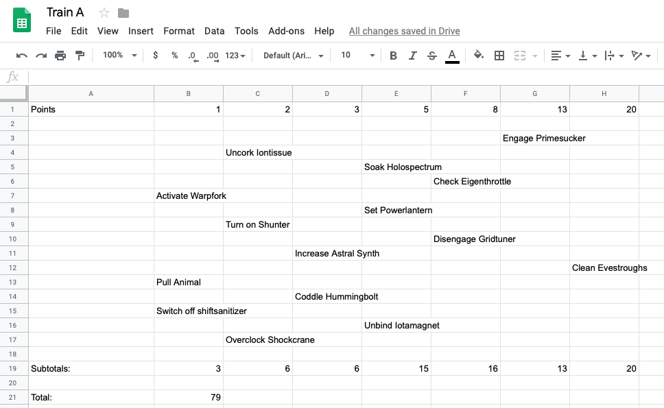

Designing Better Sprints
raj@bitstream.io
Bad sprints are a waste of your time
They require a lot of overhead, provide few benefits
5 features of a well-designed sprint:
• Prevents overwork
• Highly-accurate project estimation
• Helps team prioritize
• Helps orgs make tradeoffs
• Reduces interruption
Questions that a sprint should
enable you to answer:
1. Which tasks will be completed at the end of this sprint.
This is different than asking "what tasks are being worked on".
Questions that a sprint should
enable you to answer:
2. If a new high-priority task needs to be addressed immediately, what tasks will not get done this sprint?
Questions that a sprint should
enable you to answer:
3. What task is each person working on right now?
This helps answer the previous question.
This is different than asking "what tasks are assigned to each person".
Questions that a sprint should
enable you to answer:
4. Am I working on the most important thing?
Sprints provide a framework for making tradeoffs, which enables us to prioritize our work.
If you don't feel you are getting the full benefit of working in a sprint, let's fix it.
Better sprints: Strategy #1
Don't call them sprints.
Better sprints: Don't call them sprints
Sprints are the wrong metaphor.
We are building a framework for pacing our work, instead of running at full capacity to exhaustion.
Better sprints: Don't call them sprints
Suggestion: Trains.
Trains run back-to-back on highly-predicable schedules.
Sequence A, B, C.
Iteration 1, 2, 3.
Better sprints: Strategy #2
Pointing is a team sport.
The Team Pointing spreadsheet method
1. List all candidate tasks for the train.

The Team Pointing spreadsheet method
2. First person places a medium-difficulty task.

3. Second person places another task
relative to the first.

4. Next person adjusts a task or places a new one.

5. Continuing going around until all tasks are placed
and their positions are stable.

6. Assign points to columns and calculate total.

Better sprints: Strategy #3
Maintain velocity.
Better sprints: Strategy #4
Prioritize with metrics.
Better sprints: Strategy #5
Leave tasks unassigned.
Each person is only assigned one task at a time.
Better sprints: Strategy #6
Iterate the process .